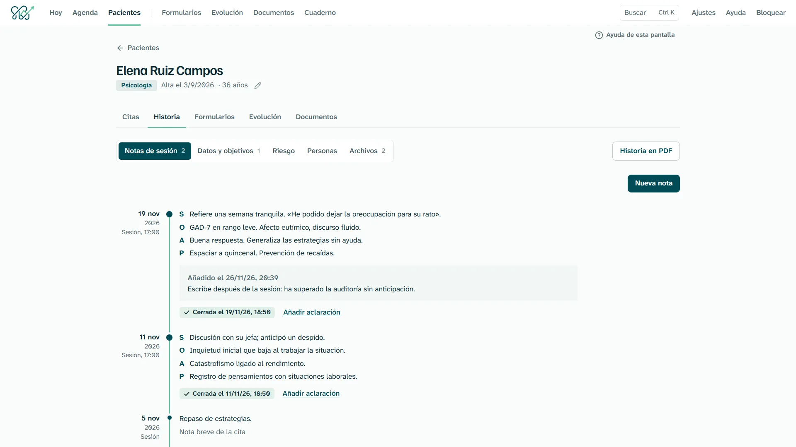
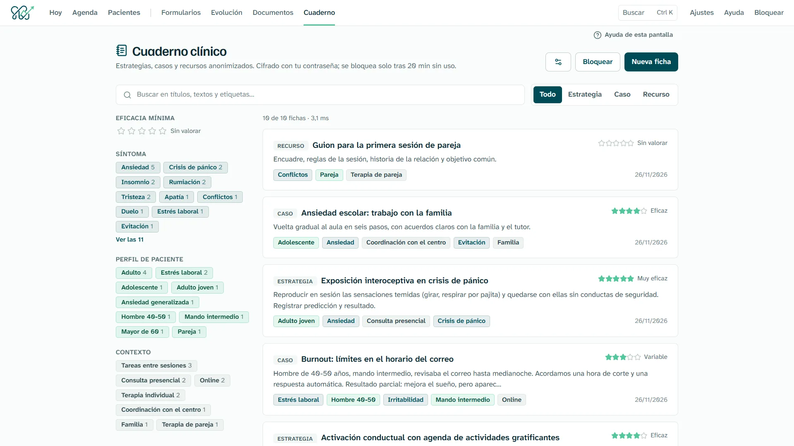

YKY › Historia clínica de psicología
Una historia clínica de psicología que se escribe rápido y se cierra de verdad
Te cuentan lo que no le han contado a nadie. Guárdalo en un sitio que se entienda seis meses después y que solo se abra con tu contraseña.
Gratis por tiempo limitado Para psicólogas y psicólogos autónomos. Windows.
Notas de sesión que no se pierden ni se reescriben
Eliges el formato (SOAP, DAP o libre) y escribes. El borrador se guarda solo mientras lo haces. Al terminar, «Cerrar nota»: queda fija y después solo admite aclaraciones con su fecha, como en papel.
Las notas breves de cada cita aparecen en la misma línea de tiempo, así antes de la sesión ves en qué quedasteis.

Todo lo de la persona, en su ficha
- Datos y objetivos: motivo de consulta, antecedentes, medicación, alergias y objetivos con su estado y avance.
- Valoración del riesgo: nivel, factores, protección y medidas. Cada valoración queda registrada y, si es moderada o alta, se ve en la cabecera.
- Personas: tutores legales, pareja, contactos de emergencia y otros profesionales, con su consentimiento. Aviso si es menor y falta el de un tutor.
- Archivos: informes previos, imágenes o documentos, cifrados y visibles dentro del programa.
Cuando te la piden, en PDF
La historia sale en PDF por apartados, con tu membrete y sin borradores. Si el paciente ejerce su derecho de acceso, puedes exportar sus datos en PDF o en JSON y elegir si van tus notas de sesión.

Un cuaderno para lo que aprendes, sin datos de pacientes
Aparte de las historias, YKY tiene un cuaderno con su propia contraseña para guardar estrategias, casos anonimizados y recursos, con etiquetas y notas de voz. Si un texto parece llevar un DNI, un teléfono o un nombre, te avisa.
Preguntas
¿Puedo cambiar una nota ya cerrada?
No. Al cerrarla queda fija y solo se le añaden aclaraciones con su fecha.
¿Dónde se guarda la historia?
En tu ordenador, dentro de una base de datos cifrada que se abre con tu contraseña. No pasa por ningún servidor.
¿Puedo borrar a un paciente si me lo pide?
Sí. YKY te enseña todo lo que se va a borrar y te pide escribir su nombre para confirmarlo. Te avisa de que las copias anteriores aún lo contienen.
Míralo antes de decidir
En Instagram enseño YKY en vídeos cortos, con pantallas reales y pacientes inventados. Si te encaja, te lo enseño en 20 minutos por videollamada, solo lo que a ti te sirve.
Gratis por tiempo limitado Para Windows. Sin tarjeta ni permanencia.
Más para quien empieza por su cuenta
- Programa para psicólogos autónomosLo que necesita una consulta individual, sin lo que traen los programas para centros.
- Empezar tu consulta por tu cuentaUna lista práctica de lo que vas a tener que organizar, más allá de la terapia.
- Programa gratis para psicólogosQué incluye gratis, por qué es gratis y qué pasará después. Sin letra pequeña.
- Protección de datos para psicólogosQué te toca a ti, qué pone el programa y por qué tener las historias en tu ordenador.
- Agenda para psicólogosCitas, huecos libres, bonos de sesiones, cobros, recibos y recordatorios por WhatsApp.
- Tests en el móvil del pacientePHQ-9, GAD-7 o tus propios cuestionarios, rellenados en casa y recibidos cifrados.